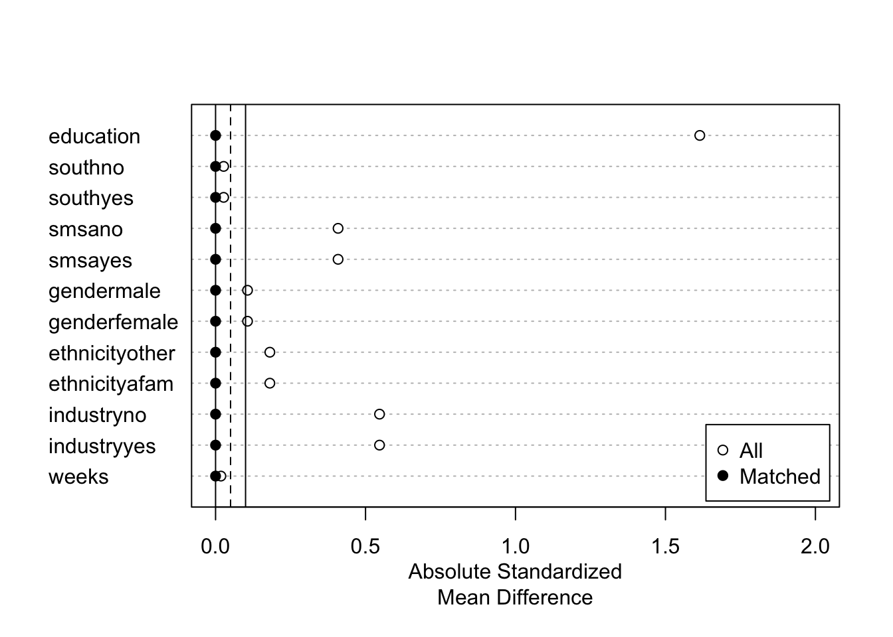
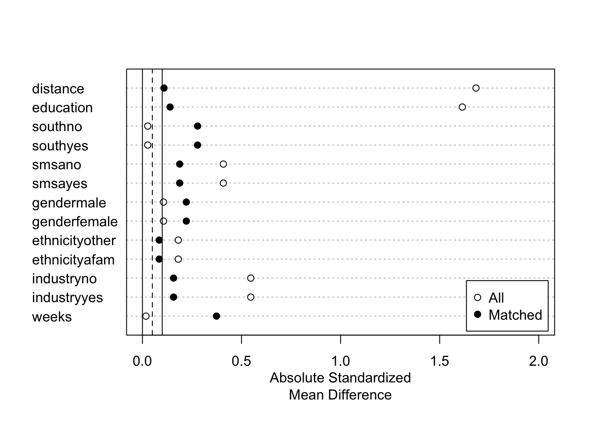
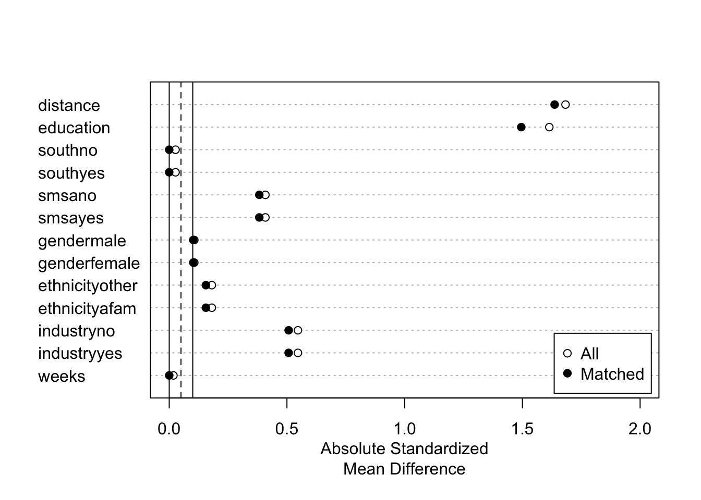

Chapter 3 線形モデルの推定
関心のあるパラメータ\(\tau(X)=E[Y|d,X]-E[Y|d',X]\)を埋め込んだ線形モデルを推定する。
- 典型的には、\(E[Y|D,X]\)を線形近似し、推定する。
\[E[Y|D=d,X=x]=\underbrace{\tau}_{Interest\ parameter}\times d+\underbrace{f(x)}_{Nuisance\ function}\] - \(f(X)=\beta_0 + \beta_1 X_1 + ...+\beta_LX_L\)
\(\tau\)について点推定だけでなく、信頼区間も推定する。
Chapter 3.2 : 前処理なしに線形モデルを推定し、信頼区間を計算する方法を紹介
Chapter 3.3 : 近似モデルの定式化への依存度を下げるために、マッチング法を用いた前処理を導入
Chapter ?? : 推定結果の表によるまとめ、可視化、および複数の推定結果を効率的に保存する方法を紹介
3.1 パッケージ & データ
library(tidyverse)
library(AER)
library(estimatr)
library(MatchIt)
data("PSID1982")3.2 線形モデルの推定
\(\tau(x)=\tau,f(x)=\beta_0+\beta_1x_1+...+\beta_Lx_L\)と特定化
サンプル内MSEを最大化するように推定
robust standard errorを計算するためにestimatrパッケージ(Blair et al. 2022b)を利用
lm_robust関数で推定
lm_robust(log(wage) ~ occupation + education + south + smsa + gender + ethnicity + industry + weeks,
data = PSID1982)## Estimate Std. Error t value Pr(>|t|)
## (Intercept) 6.3023136910 0.175077599 35.99725906 1.387672e-150
## occupationblue -0.1395675030 0.037132508 -3.75863385 1.879532e-04
## education 0.0510611291 0.007213451 7.07859910 4.179497e-12
## southyes -0.0849846890 0.034214451 -2.48388287 1.327422e-02
## smsayes 0.1793275171 0.030659738 5.84895787 8.226856e-09
## genderfemale -0.4463245183 0.038664691 -11.54346517 6.436339e-28
## ethnicityafam -0.1921038599 0.058100604 -3.30640037 1.002829e-03
## industryyes 0.1073240453 0.030046094 3.57197991 3.834060e-04
## weeks -0.0001191249 0.002944063 -0.04046274 9.677380e-01
## CI Lower CI Upper DF
## (Intercept) 5.958457704 6.646169678 586
## occupationblue -0.212496509 -0.066638497 586
## education 0.036893763 0.065228495 586
## southyes -0.152182571 -0.017786807 586
## smsayes 0.119111164 0.239543870 586
## genderfemale -0.522262763 -0.370386273 586
## ethnicityafam -0.306214636 -0.077993084 586
## industryyes 0.048312901 0.166335189 586
## weeks -0.005901325 0.005663075 586線形モデルによる推定は、いくつかの問題がある
異なるグループ間で、\(X\)の分布が異なる場合、回帰式の定式化に強く依存する
一般に平均効果ではなく、加重平均が推計される
サンプルサイズに比べて、少数のコントロール変数を導入できない
以下ではマッチング法、機械学手法を用いた頑強な推定を目指す
3.2.1 RCTデータへの応用
原因変数が完全にランダム化されている場合、因果効果の識別を目的に回帰分析を応用する必要はない
因果効果の推定の改善、効率性向上、を目的として線形モデルの利用は議論されてきた。(Freedman and others 2008; Freedman 2008)
(Lin and others 2013)は、以下のような交差項を導入したモデルを用いることで、平均の差の推定に比べて、漸近的効率性が悪化することはない（同等か改善する）ことを示した
\[E[Y|D,X]=\beta_{D}\times D+\beta_1\times X_1+...+\beta_L\times X_L\]
\[+\underbrace{\beta_{1D}\times D\times X_1+...+\beta_{LD}\times D\times X_L}_{交差項}\]
3.3 マッチング法による修正
回帰を行う事前準備としてマッチング法を利用する
重回帰が持つ関数形への依存度を減らせる (Daniel E. Ho et al. 2007)
MathItパッケージ (Daniel E. Ho et al. 2011)を利用
多数のマッチング法が実装されている
3.3.1 Exact matching
\(X\)が完全に同じサンプル同士をマッチングする
原因変数の分布に偏りがある場合（本例ではコントロールグループが少ない）、少ないグループ内での平均効果(Average treatment effect for treat または control)の推定を目指すことでマッチできないサンプルを減らすことが期待できる。
fit.m <- matchit(occupation ~ education + south + smsa + gender + ethnicity + industry + weeks,
data = PSID1982,
method = "exact",
estimand = "ATC"
)この例では、incomeもコントロール変数に加えた場合、Exact matching不可能（一つもマッチングできない）
マッチング結果の表示
fit.m## A matchit object
## - method: Exact matching
## - number of obs.: 595 (original), 164 (matched)
## - target estimand: ATC
## - covariates: education, south, smsa, gender, ethnicity, industry, weeksSample sizesにて、マッチングできなかったサンプル数（985のコントロールグループ中、667サンプルがマッチングできなかった）が確認できる
マッチング結果の図示
fit.m |>
summary() |>
plot(xlim = c(0,2))
- マッチング結果を変数として含んだデータを作成
df <- match.data(fit.m)“subclass”: マッチングしたグループ
“weights”：マッチング後の推計に用いるウェイト
マッチングしたデータを用いた推定
- 新たに作成されるweight (defaltではweights)を用いた、加重推定で実装
lm_robust(log(wage) ~ occupation,
df,
weights = weights)## Estimate Std. Error t value Pr(>|t|) CI Lower
## (Intercept) 7.0420847 0.04994819 140.98778 2.070307e-171 6.9434512
## occupationblue -0.1132829 0.06751827 -1.67781 9.531235e-02 -0.2466123
## CI Upper DF
## (Intercept) 7.14071815 162
## occupationblue 0.02004655 1623.3.2 Coarsened exact matching
Coarsened exact matching(Iacus, King, and Porro 2012)の実装
- 連続変数をカテゴリー変数化することで、マッチングできるサンプルサイズを増やすことが期待できる
fit.m <- matchit(occupation ~ education + south + smsa + gender + ethnicity + industry + weeks,
data = PSID1982,
method = "cem",
estimand = "ATC")- マッチング結果
fit.m## A matchit object
## - method: Coarsened exact matching
## - number of obs.: 595 (original), 279 (matched)
## - target estimand: ATC
## - covariates: education, south, smsa, gender, ethnicity, industry, weeks- 可視化
fit.m |>
summary() |>
plot(xlim = c(0,2))
Exact matching以外のマッチング法では、マッチングされたサンプル内でも\(X\)の違いが残る
- マッチングされたサンプル内で回帰分析を行うことで、再調整する
df <- match.data(fit.m)
lm_robust(log(wage) ~ occupation + education + south + smsa + gender + ethnicity + industry + weeks,
df,
weights = weights)## Estimate Std. Error t value Pr(>|t|) CI Lower
## (Intercept) 7.305267831 0.470201151 15.5364737 2.515246e-39 6.379540966
## occupationblue -0.190660781 0.070749688 -2.6948639 7.483408e-03 -0.329951989
## education 0.041323645 0.017944795 2.3028206 2.204947e-02 0.005994129
## southyes 0.006005311 0.076041911 0.0789737 9.371120e-01 -0.143705170
## smsayes 0.296308810 0.103188389 2.8715325 4.408722e-03 0.093152643
## genderfemale -0.534957602 0.102689392 -5.2094729 3.762899e-07 -0.737131350
## ethnicityafam -0.324068758 0.137890701 -2.3501857 1.948409e-02 -0.595546456
## industryyes -0.012240212 0.050900941 -0.2404712 8.101474e-01 -0.112453426
## weeks -0.019122771 0.009897325 -1.9321150 5.439142e-02 -0.038608517
## CI Upper DF
## (Intercept) 8.2309946951 270
## occupationblue -0.0513695723 270
## education 0.0766531614 270
## southyes 0.1557157913 270
## smsayes 0.4994649767 270
## genderfemale -0.3327838534 270
## ethnicityafam -0.0525910603 270
## industryyes 0.0879730014 270
## weeks 0.0003629743 2703.3.3 Propensity score with subclassification
Coarsened exact matchingでもマッチングできないサンプルが多数出てくる可能性
- とくに\(X\)が大量にある場合
1次元の距離指標を用いて、マッチングを行う
- 距離指標としては、Mahalanobis’ Distance、Propensity scoreなど
ここではPropensity score \(p_d(X)\)を用いる
\[p_d(X)\equiv \Pr[D=d|X]\]
属性\(X\)のユニットの中で、原因変数の値が\(d\)である人の割合
未知の場合、データから推定する必要がある
推定された傾向スコアを用いたStratification マッチング
- ロジットにて傾向スコアを推定
fit.m <- matchit(occupation ~ education + south + smsa + gender + ethnicity + industry + weeks,
data = PSID1982,
method = "subclass",
estimand = "ATC"
)- マッチング結果
fit.m## A matchit object
## - method: Subclassification (6 subclasses)
## - distance: Propensity score
## - estimated with logistic regression
## - number of obs.: 595 (original), 595 (matched)
## - target estimand: ATC
## - covariates: education, south, smsa, gender, ethnicity, industry, weeks- マッチング結果の図示
fit.m |>
summary() |>
plot(xlim = c(0,2))
- マッチングしたデータを用いた推定
df <- match.data(fit.m) # マッチング結果を含んだ
lm_robust(log(wage) ~ occupation + education + south + smsa + gender + ethnicity + industry + weeks,
df,
weights = weights)## Estimate Std. Error t value Pr(>|t|) CI Lower
## (Intercept) 6.445657234 0.228167973 28.2496143 1.880233e-111 5.997530666
## occupationblue -0.186704124 0.058965993 -3.1663017 1.624117e-03 -0.302514541
## education 0.041386176 0.010950515 3.7793816 1.733061e-04 0.019879140
## southyes -0.051691098 0.061819039 -0.8361679 4.034013e-01 -0.173104955
## smsayes 0.279464109 0.087934075 3.1781094 1.560487e-03 0.106759786
## genderfemale -0.440702842 0.040582880 -10.8593289 3.723360e-25 -0.520408448
## ethnicityafam -0.297247615 0.074173427 -4.0074677 6.928814e-05 -0.442925744
## industryyes 0.120204825 0.040286300 2.9837643 2.965829e-03 0.041081708
## weeks -0.001910554 0.004069346 -0.4694990 6.388877e-01 -0.009902832
## CI Upper DF
## (Intercept) 6.893783801 586
## occupationblue -0.070893706 586
## education 0.062893212 586
## southyes 0.069722759 586
## smsayes 0.452168431 586
## genderfemale -0.360997235 586
## ethnicityafam -0.151569487 586
## industryyes 0.199327942 586
## weeks 0.006081725 5863.3.4 Nearest neighbor matching
傾向スコアを用いた最近旁マッチング
傾向スコアがもっとも似ているサンプルとマッチングする
デフォルトでは、Replacement無しのマッチングを行う
fit.m <- matchit(occupation ~ education + south + smsa + gender + ethnicity + industry + weeks,
data = PSID1982,
method = "nearest",
estimand = "ATC"
)- マッチング結果
fit.m## A matchit object
## - method: 1:1 nearest neighbor matching without replacement
## - distance: Propensity score
## - estimated with logistic regression
## - number of obs.: 595 (original), 580 (matched)
## - target estimand: ATC
## - covariates: education, south, smsa, gender, ethnicity, industry, weeks- マッチング結果の図示
fit.m |>
summary() |>
plot(xlim = c(0,2))
マッチングしたデータを用いた推定
- replacement無しの場合ｍマッチングしたペア(subclass)でクラスタリングしたrobust standard errorの利用を推奨 (Abadie and Spiess 2021)
df <- match.data(fit.m) # マッチング結果を含んだ
lm_robust(log(wage) ~ occupation + education + south + smsa + gender + ethnicity + industry + weeks,
df,
clusters = subclass,
weights = weights)## Estimate Std. Error t value Pr(>|t|) CI Lower
## (Intercept) 6.2462813341 0.183058784 34.1217242 7.558397e-47 5.881494177
## occupationblue -0.1334544904 0.038580415 -3.4591253 6.683394e-04 -0.209553177
## education 0.0544477095 0.007922490 6.8725504 3.319677e-10 0.038756725
## southyes -0.0867718070 0.034560087 -2.5107520 1.286306e-02 -0.154932980
## smsayes 0.1750365698 0.031398444 5.5746893 7.276141e-08 0.113153785
## genderfemale -0.4412820442 0.039310364 -11.2255903 1.172494e-17 -0.519606156
## ethnicityafam -0.2065702123 0.060934629 -3.3900299 1.422677e-03 -0.329149700
## industryyes 0.1042406869 0.031857789 3.2720628 1.227905e-03 0.041477821
## weeks 0.0001159795 0.003089531 0.0375395 9.702593e-01 -0.006146773
## CI Upper DF
## (Intercept) 6.611068491 73.58037
## occupationblue -0.057355804 190.88829
## education 0.070138694 116.35533
## southyes -0.018610634 194.25602
## smsayes 0.236919355 218.36961
## genderfemale -0.362957932 74.19948
## ethnicityafam -0.083990725 47.07527
## industryyes 0.167003553 235.35152
## weeks 0.006378732 36.52184